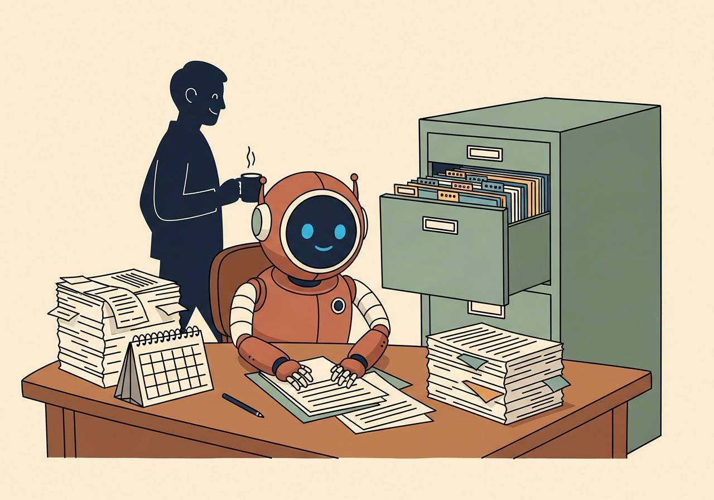

A short, gentle guide to AI agents for the people who actually run the company. No jargon, no robots replacing anyone. Just a calmer way to handle the small repetitive things, so the team can spend more time on the parts of the work that genuinely need a human.
You've probably been hearing the word agent a lot lately. Some of it is hype. Some of it is genuinely useful. This guide is here to cut through the noise and show you, department by department, what a sensible first agent could look like in your own day-to-day.
Read it in any order. Pick the bits that feel relevant. The point isn't to automate everything tomorrow, it's to spot one or two small wins per team and try them out.
Most customer messages aren't unique. Lots are variations of "where is my order?", "how do I return this?", or "do you have this in stock?". An agent can read every new email or chat, recognise these patterns, and draft a calm, on-brand reply for someone to glance at and send.
Pick one repetitive question (say, "where is my order?"). Have the agent draft a reply but not send it. A human reads, edits if needed, hits send.
That's it. Once you trust the drafts, you can let it send the easy ones on its own.

Admin is full of small chores that take five minutes each, fifty times a week. An agent is very good at exactly that shape of work: rename a file, log a number into a sheet, send a reminder, forward an invoice to the right inbox, schedule a meeting.
Pick one filing rule that drives you a bit mad. Maybe supplier invoices ending up in three different inboxes. Ask the agent to forward each one to a single shared folder and rename it YYYY-MM-DD-supplier-name.pdf.
One small ritual, automated. Multiply by ten over a year.
Purchasing decisions get easier when you can see everything in one place. An agent can quietly pull together supplier prices, your own stock levels, recent sales velocity, and surface the items that need attention this week, not the 2,000 that don't.
Pick your top 20 products by revenue. Each Monday morning, the agent sends one short email: current stock, weeks of cover at current sales rate, and any supplier price changes.
No decisions made yet — just one tidy snapshot that used to take an hour to assemble.
Operations runs on hundreds of small signals: late shipments, stuck returns, carrier delays, a spike in damaged-goods complaints. An agent can monitor those signals and tell you, in plain English, which ones genuinely need a human today.
One agent, one job: each morning, list any order that should have been delivered yesterday but wasn't. Drop the list into a chat channel.
The team sees the problems before the customers email. That's the entire value of operations automation in one sentence.
Marketing is creative work, and agents are not very good at being creative. But they are excellent at the supporting cast: pulling last week's numbers, drafting newsletter copy in your house tone, suggesting subject lines, summarising what worked last month.
Every Monday, the agent sends a draft of last week's email recap: opens, clicks, orders, and a one-paragraph note on which subject line did best and why it probably did.
You decide what to do with it. The agent just makes sure the question is already on your desk.
Not the most important thing. The most boring thing. The five-minute task you do every day that nobody is proud of doing. That's the right place to start.
"Open this inbox. Find the messages that say X. Reply with this template, filled in like so." If you can write it down, an agent can usually do it. If you can't write it down, it's not ready yet.
The agent prepares the action but a human approves before anything goes out. This is the single most important habit. It builds trust, catches mistakes, and tells you very quickly whether the agent has actually understood the job.
Once you've seen 50 good drafts in a row, let the agent send the obvious ones unaided and keep escalating the unusual ones to a human. You're now saving real time.
That's the whole loop. One small repetitive job at a time. After six months you'll look up and notice the team is doing more interesting work, with no late-night heroics.
For more in-depth examples of the patterns agents follow, the shapes they come in, and how to pick the right one for a given job, see the visual companion piece: Business agents, explained visually. And for the mechanics of where agent drafts actually land in the tools you already use, see Where do agent drafts actually go?
Agents don't replace anyone. They replace the bits of the job that nobody actually wanted to do. The team still owns the relationships, the judgement calls, and the things that need taste and care.
Start ridiculously small. A single drafted reply, a single weekly snapshot. You learn more from one small agent running for a month than from a big plan that never ships.
The best agents are boring. If yours is dramatic or surprising, something is wrong. Good ones do the same useful thing every day, quietly, and you forget they're there.